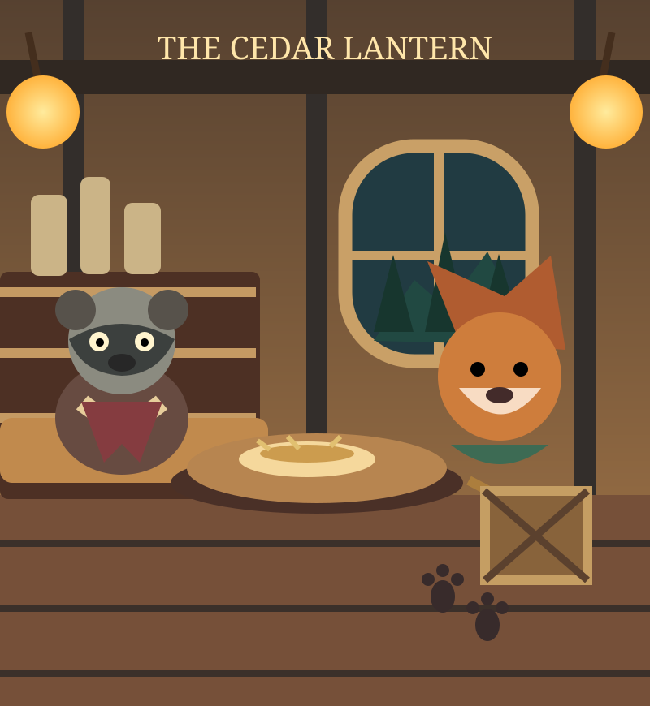

THE CEDAR LANTERN • WONDERWOOD
The Missing Golden Pie
Tap the glowing markers to inspect the room.
0 of 5 clues foundExplore the scene
ROCCO • RACCOON BARTENDER
The pie vanished while the music was playing. Can you help?
📒 Ollie's evidence notebook
Inspect each clue. When you have them all, connect the two strongest pieces of evidence.
No evidence connected yet.
🦦 Help shape Wonderwood
This is a playable prototype of our first mystery. Tell us what felt fun, confusing, or too small on your phone. No login, advertising, or analytics are included.